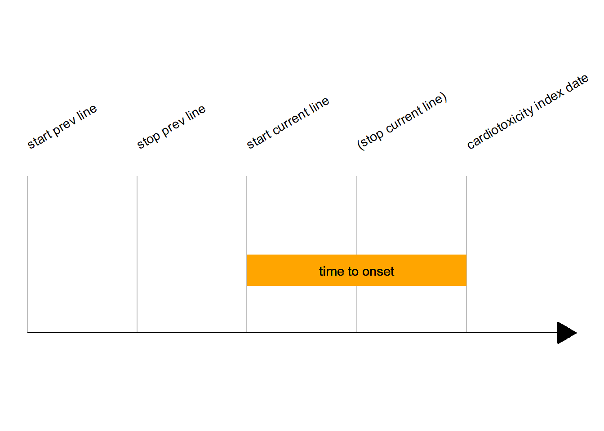

Chapter 10 Multi-event variables
10.1 Date and time variables
As dates and times are used across events to capture delays between an event and another (e.g. between index cardiotoxicity and death), there are attributed a specific naming scheme:
They do not start by the event identifier
They have their own identifier
datefor dates andtifor times.Time variables always have 3 components:
The
tiidentifierThe first event identifier
The second event identifier
There is an exception to this naming rule: time between 2 cures of ICI (either previous line or current line), which has the long suffix regimen_freq.
For example, time between index cardiotoxicity and death is ti_ic_death. An event identifier can have a middle _ if its very long (e.g. cl1stctla4_other for current line first dose of an unspecified anti-CTLA4, although this is quite a rare case.
Time variables represent delays between two dates.
Of note, times can be expressed in days, weeks or years.
| var | event | unit | quick desc |
|---|---|---|---|
ti_tobaccoquit_ic |
demo | years | From tobacco quitting to IC |
ti_otx_ic |
demo | years | From organ transplant x to IC |
ti_plicistop_ic |
demo | days | From previous line ICI stop (end of regimen) to IC |
pl_drug_regimen_freq |
previous_line | weeks | From one cure to another, during an ICI therapy regimen |
ti_ic_1ststeroid |
ic | days | From IC to first dose of steroids |
ti_cl1stnivo_ic |
cl | days | From current line ICI-drug 1st infusion to IC |
ti_ic_ihdischarge |
ih | days | Length of hospital stay |
10.2 Time to cardiotoxicity onset from immune checkpoint inhibitor introduction
As the title suggests, the idea is to collect the time to onset between the first dose of immune checkpoint inhibitor received during the current cycle and the occurrence of cardiotoxicity.

This data is stored at the immune checkpoint inhibitor level, e.g., a patient who received nivolumab will have this data stored in a nivolumab specific variable. The structure for this data is
| Current | Target | Description |
|---|---|---|
start_days_drug |
ti_icistart_ic_drug |
It is a delay, in days. Drug name is abbreviated here in the current naming (e.g. nivo for nivolumab). Sometimes, the drug name is wrong (see below) Could be : time variable (ti_) from (ici_start) to index cardiotoxicity (ic), for drug (drug complete name) |
start_days_drugx |
ti_icistart_ic_drug__calc |
Same but computed from dates (when available). Mind the “x” at the end of the name Could be: same but with a standardized suffix indicating a calculation |
first_doses_drug_mce |
Drug name is complete here. It is an old variable which has now the \@ HIDDEN status, and is similar to start_days_drugx |
To capture this time to onset, you have to check every possibilities for a patient, e.g. you must check for all immune checkpoint inhibitor level time variables and choose which of these 3 variables you keep first, if ever more than one is available. This gives a quite heavy piece of code
ti_icistart_ic = expr(pmax( # pmax here: maximum delay (in the case multiple ICI were prescribed sequentially)
eval(tto_uni_3v(start_days_nivo,
start_days_nivox,
first_doses_nivolumab_mce)), # identical to start_days_nivox but it is @HIDDEN
eval(tto_uni_3v(start_days_pem,
start_days_pemx,
first_doses_pembrolizumab_mce)), # @HIDDEN
eval(tto_uni_3v(start_days_pem_2, # Other Anti-PD1 regimen
start_days_pem_2x,
first_doses_pembrolizumab_mce_2)),# @HIDDEN
eval(tto_uni_3v(start_days_pem_3, # Cemiplimab
start_days_pem_3x,
first_doses_pembrolizumab_mce_3)),
eval(tto_uni_3v(start_days_atez,
start_days_atezx,
first_doses_atezolizumab_mce)),
eval(tto_uni_3v(start_days_ave,
start_days_avex,
first_doses_avelumab_mce)),
eval(tto_uni_3v(start_days_durv,
start_days_durvx,
first_doses_durvalumab_mce)),
eval(tto_uni_3v(start_days_durv_3,# Ohter Anti-PDL1
start_days_durv_3x,
first_doses_durvalumab_mce_3)),
eval(tto_uni_3v(start_days_ipi,
start_days_ipix,
first_doses_ipilimumab_mce)),
eval(tto_uni_3v(start_days_trem,
start_days_tremx,
first_doses_tremelimumab_mce)),
eval(tto_uni_3v(start_days_trem_2, # Other Anti-CTLA4
start_days_trem_2x,
first_doses_tremelimumab_mce_2)),
na.rm = TRUE
) - # look at the minus!! Shall we keep it? 2022-09-16
eval(numvar_uni(cardiotox_days_1,
cardiotox_days_1x))
# Number of days before presentation that Myocarditis symptoms began
)Where eval(tto_univ_3v()) would be a prioritizer function among the 3 variables. Note that we might want to substract the cardiotox_days_1 delay, if we’re interested in the beginning of symptoms rather than index date of referral.
10.3 Death
ih_ou_death: During index hospitalizationfu_death: During follow-up (later than discharge)
10.4 Electrocardiograms
be: Baseline (before immune checkpoint inhibitor current cycle 1st infusion)be2: The same +++ it is a duplicate in a separate event (should be merged in the future). There are more features here.ie: Index cardiotoxicity (1st EKG at the time of cardiotoxicity diagnosis)ie2: The same ++ it is a duplicate in a separate event (should be merged in the future). There are more features here.ih_ekg: Additional EKG(s) during index hospitalizationfu_ekg: Most recent EKG during follow-up
10.4.1 Features
| Variable | Definition |
|---|---|
exist |
Availability of said EKG |
analysis |
All EKG diagnoses (rhythm, durations, repolarization…) |
|
Numeric features (only available for be2 and ie2) |
Also, timings according to index cardiotoxicity, and upload variables.